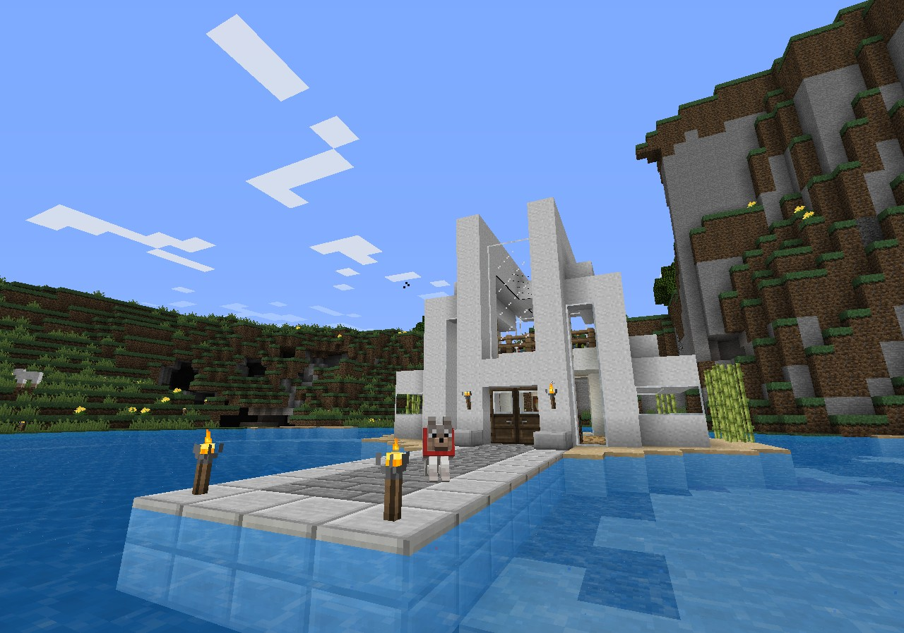
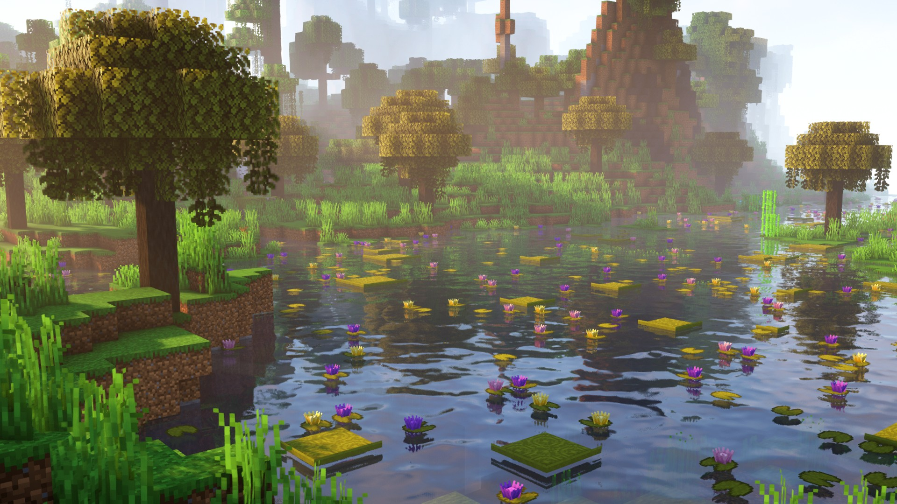
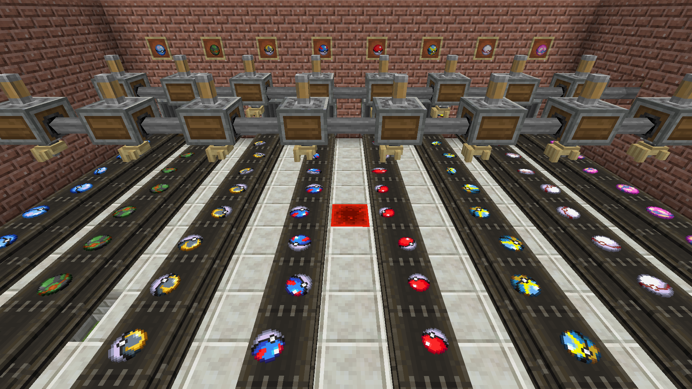

Minecraft naudojimas atsipalaiduoti
Gal jau matėte, jog Minecraft turi daugybę įvairiausių tipų žaidėjų, tačiau atsipalaidavimas yra daugelio žaidėjų tikslas. Kiekvienas žmogus tai daro skirtingai. Kai kurie stato didžiules pilis, kiti kovoja, bet daugelis norinčių atsipalaiduoti žmonių tiesiog žaidžia: darosi namus, kasinėjasi dėl medžiagų ir kovoja su monstrais. Visi kiti žaidėjų tipai gali mus suklaidinti ir priversti pamiršti, jog yra dalis žmonių, kurie naudoja Minecraft tam, kam jis pradžioje buvo sukurtas. Yra nemažai žmonių, kurie net pasikeičia žaidimo versiją į tą, kuri buvo išleista 2011 m. ar net 2009 m. Nuo tol jau praėjo 17 metų...

Modai
Galiausiai yra tikrai nemaža grupė žaidėjų, kuriems nusibodo paprastas žaidimas – jie nori paeksperimentuoti ar galbūt pakeisti kokią nors nervinančią žaidimo funkciją. Tuomet jie įsidiegia modus (žaidimo modifikacijas), kurie gali pakeisti Minecraft taip, kaip tik galite įsivaizduoti. Vieni žmonės kuria modus, galvoja, kaip galima pagerinti žaidimą, o kiti tik nori žaisti su tais žaidimo patobulinimais. Modai yra pagrindinė priežastis, kodėl Minecraft niekada nepabosta. Su jais šis žaidimas gali tapti įvairesnis, tikroviškesnis ar net beveik visiškai pakeisti savo funkcijas ir tapti vos ne kitu žaidimu. Jūs galite žaisti modus ir kituose serveriuose, tačiau ten dažnai žaidimas keičiamas naudojant jau egzistuojantį žaidimo kodą: komandas, komandų blokus ir t. t. O tikrieji modai pakeičia patį „Minecraft“ kodą, ir juos visada reikia atsisiųsti patiems (net jei bandote prisijungti į serverį su tuo modu).

